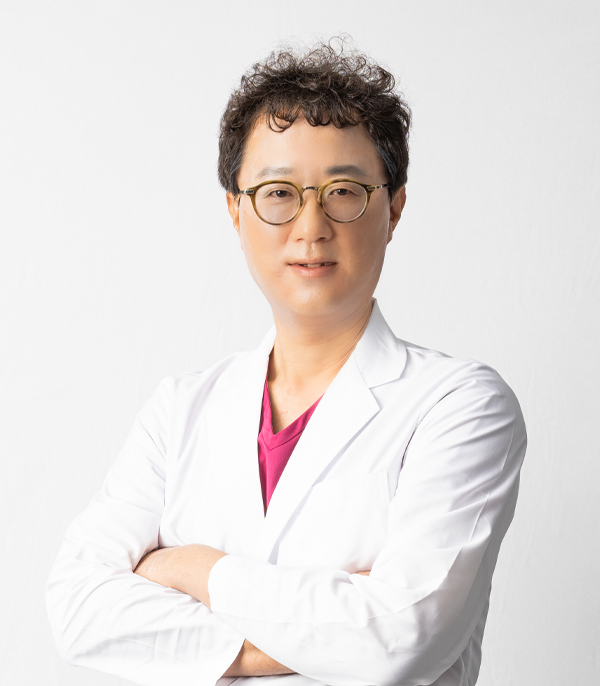
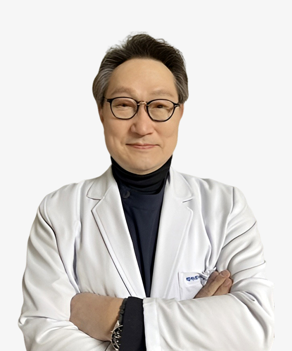
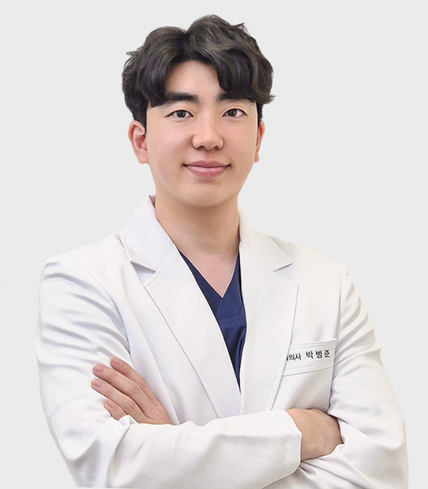
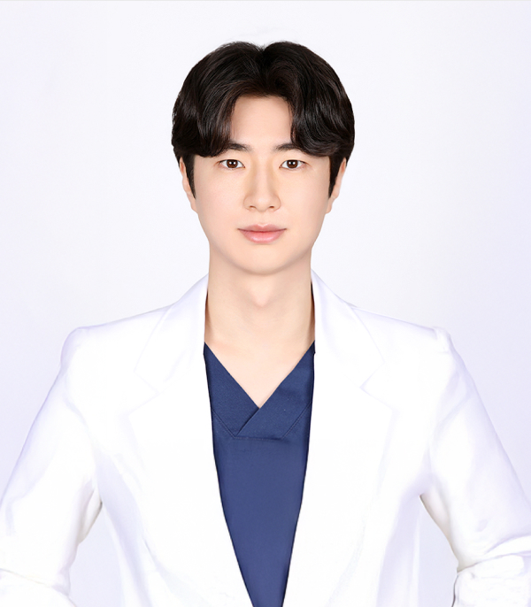
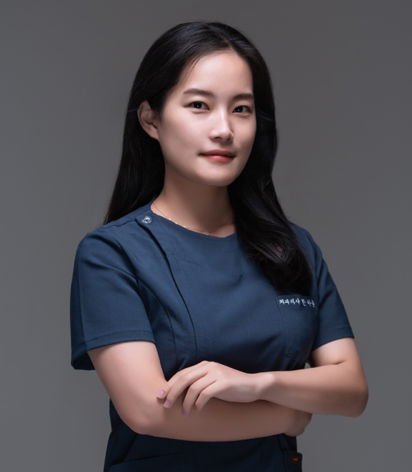
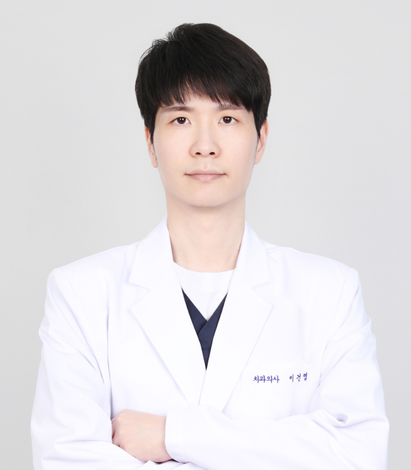

<%=m_client_name_s%> 의료진 소개
<%=m_client_en%>
<%=m_client_name%>
의료진 인사말
1만 시간의 법칙
성공의 임계점
캐나다 맥길대의 신경과학자 다니엘 레비틴 교수의 연구에 따르면,
어느 분야에서든 세계적 수준의 전문가의 치위에 오르려면
적어도 1만 시간 정도의 연습이 필요하다고 합니다.
1만 시간은 하루도 거르지 않고
날마다 3시간씩 훈련을 한다고 가정할 경우,
약 10년에 해당하는 시간입니다.
[출처] 성공의 임계점, 1만 시간의 법칙
인생을 살아가면서 필요한 의, 식, 주 중 가장 큰 즐거움이 '식' 이라는 건 우리 모두에게 공통된 의견입니다.
하지만 오랜시간동안 ‘식‘의 즐거움을 잊은 채 살아오신 많은 분들이 계셨고, 이에 치과의사로서 저의 다짐은 더욱 단단해졌습니다.
<%=m_client_name_s%>치과를 찾아주신 모든 분들께 '씹는 즐거움' 을 되찾아드리고, 앞으로도 '행복한 인생' 을 살아가실 수 있게 최선의 진료를 다하겠습니다.
"씹는 즐거움, 행복한 인생을
책임지겠습니다"
<%=m_client_name%> 의료진
한수일 원장
임플란트 전담의
- (전)전북대학교 치과대학 겸임교수
- 통합치의학 전문의(보건복지부 인증)
- 원광대 치의학대학원 박사 과정 수료
- 아주대 치의학대학원 석사
- 원광대 치과대학 졸업
- 남성고 졸업
- 대한구강악안면임플란트학회 정회원
- 대한치과이식임플란트학회 정회원
- 대한치과교정학회 정회원
- 대한턱관절교합학회 회원
- 유럽아시아 임플란트 학회 부회장
(EAIA, Europe Asia Implant Association)
Han Suil

<%=m_client_name%> 의료진
배대천 원장
임플란트 전담의
- 조선대 졸업
- 이화여자대학교 구강악안면외과인턴수료
- 목포과학대학치위생과교수역임
- 미국뉴욕NYU치과대학임플란트학과수료
- 미국플로리다Nova southeastern University치과대학방문교수
- CIEL임플란트연구회학술이사
- ALC임플란트advanced course수료
- 대한치과이식학회정회원
- 대한치과보철학회정회원
- 대한악관절교합학회정회원
- 한국임상교정연구회정회원
Bae Daecheon

<%=m_client_name%> 의료진
김홍열 원장
보철과 원장
- 단국대학교 치과대학 수석졸업
- 단국대학교 치과대학원 보철학 석사
- Osstem, Dentium, Neo 임플란트 임상과정 수료
- 대한 임플란트학회 정회원
- 대한 보철학회 정회원
- 임상치주학회 정회원
- 서울 하얀치과 대표원장
- 27대 충남 치과의사회 회장
- 초대 충남 치과의사회 대의원 총회 회장
- 중부권 치과의사회(CDC) 초대 조직위원장
- 대한 치과의사협회 윤리위원회 이사
- 충남 도지사 공로패
- 대한치과의사협회 회장 감사패
- 보건 복지부장관 공로패
Kim Hong yeol

<%=m_client_name%> 의료진
이희라 원장
보철과 원장
- 조선대학교 치과대학 졸업
- 대한치과보존학회 정회원
- 대한치과보철학회 정회원
- 건강보험공단 구강검진 교육 이수
- TMJ 턱관절 교육 수료
Lee Hui Ra
<%=m_client_name%> 의료진
박병준 원장
보철과 원장
- 원광대학교 치과대학 졸업
- 전주고등학교 졸업
- 국민건강보험공단 지정 국가구강검진의
- 덴탈빈 측두하악관절자극요법 교육 수료
Park Byeong-jun

<%=m_client_name%> 의료진
김지성 원장
보철과 원장
- 고양외국어고등학교 졸업
- 전북대학교 치과대학 졸업
- 턱관절장애 교육연구회 교육과정 수료
- 국민건강보험공단 구강검진 교육 이수
- 前) 충주시 보건소 진료과
Kim Ji-seong

<%=m_client_name%> 의료진
한아름 원장
보철과 원장
- 보건복지부 인증 치주과 전문의
- 원광대학교 치과대학 졸업
- 전남대학교 치과병원 인턴수료
- 전남대학교 치주과 레지던트 수료
- 전남대학교 치과대학 치의학 석사
Han A-reum

<%=m_client_name%> 의료진
이건영 원장
보철과 원장
- 원광대학교치과대학졸업
- 대한치과보철학회 정회원
- 대한치과보존학회 정회원
- 턱관절장애 교육 연수회 교육과정수료
- 국민건강보험공단 구강검진교육 이수
- 전) 서울정플란트치과의원 부원장
Lee GeonYeong
